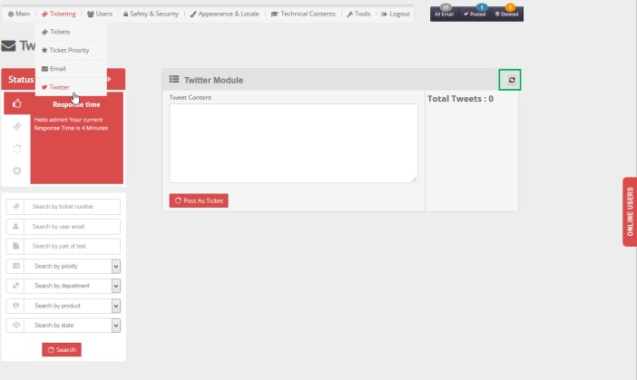
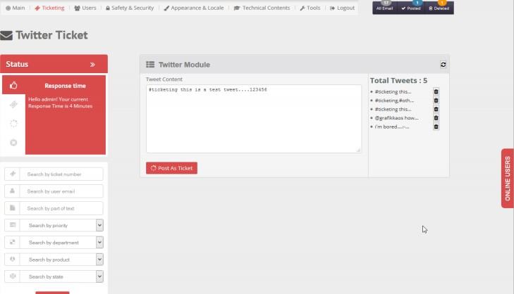
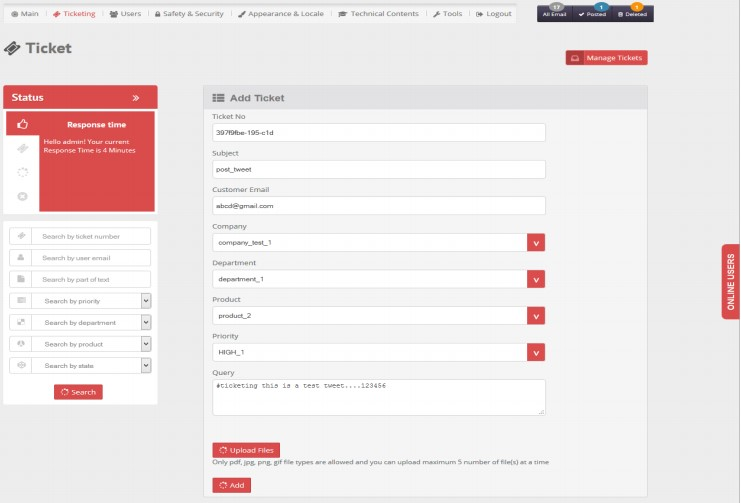
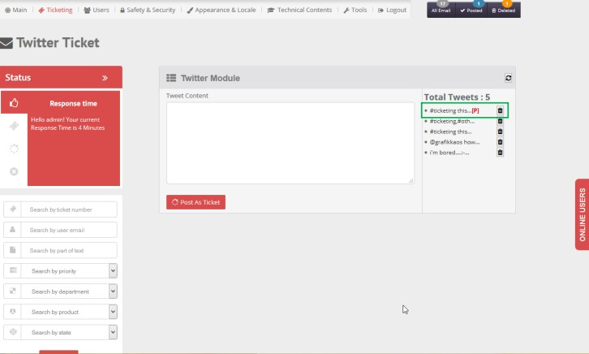

- Select Twitter From Ticketing top menu. Twitter Module window will open with blank tweet list for first time since no tweet is fetched.

- Click Refresh icon in right panel for fetching tweets from given twitter account as set in settings tab
- Once move to other page without finishing the tweet fetching task, job will be paused. Navigate back to twitter page and click Refresh icon to start the fetching job again
- Select a tweet from right panel will fetch it to the adjacent section with tweet content

5. To Post Tweet as Ticket, fill up the details like subject, company, department, product and priority, edit content then click Add button.

- Post this tweet as ticket will update the tweet status as [P] in Twitter module

Created with the Personal Edition of HelpNDoc: Easily create EBooks